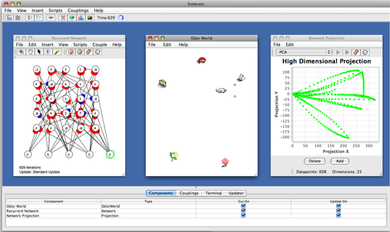

Workspace
The Simbrain workspace
is the framework within which a simulation is run. It contains
components which are coupled to one another, and tools for managing
these interactions. More specifically, the
workspace is responsible for:
(1) Maintaining a list of
components (neural networks, virtual worlds, data tables, plots, etc.)
(2) Maintining a list of couplings,
which are links between components (e.g. from a neural network to
a time-series plot of the activation of some nodes in that network).
(3) Managing simulation updates.
Sometimes custom updating is needed, and the workspace has different
methods for achieving this. All updates are iteration
based. The network is updated using the press or play
buttons in the toolbar, and the current iteration number is also visible in the toolbar.
The workspace is visible in the GUI as the Simbrain desktop (a screenshot is below). The desktop contains menus, a toolbar, and a main space in which all components are shown. There is also a set of tabs at the bottom of the network which allow the user to view couplings, set certain properties of components, and monitor a simulation in other ways.
Workspaces are stored as .zip files. These files contain .xml
representations of all components and couplings in a simulation (and
some other information as well) They can be unzipped, and
individual saved
component and coupling descriptions can be inspected (Note that
you cannot currently change the files, rezip, and re-open).
